Maths
Summary
This is a blog which talks about my life in mathematics.
This includes a great range of things from the cool bits of maths I do on a day to day basis
to the politics of being a woman in mathematics
to the people I found to inspire me along my career as a mathematician!
Take a scroll down to discover more... Or click back to blogs(top right) to go back.
Inspiration
A mentor of mine sent me this talk by Stephanie shirley on Tedx.
It is extremely inspiring and funny. The relevance to maths being that the speaker did
a mathematics degree at night school. To watch
click here.
Lessons of the day
- Don't use a home laptop for high accuracy matlab stuff.
- Do enjoy the moment the maths gets too complicated for your computer... this means you are on to the real stuff!
- Don't be too excited that you have solved the problem.... you probably missed something.
- Do research, cause problem solving is fun.
Cooking
Summary
This is a blog which talks about my life in cooking.
This includes a great range of things from the recipes that have been passed down through the generations
to the experiments I have daily in the kitchen
to the family and friends who share their their wisdom and ideas and most importantly a love of food!
Take a scroll down to discover more... Or click back to blogs(top right) to go back.
Pulled Pork
This experiment was a great success. Really simple recipe, found here!
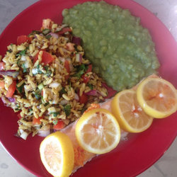
Salmon
This meal is a favourite. Add pilau rice seasoning, coriander and spring onions to
the rice. The salmon take 25-30 minutes in the oven at 180C, in a foil parcel. I put lemon slices
on top, or if I am feeling adventurous I put some of my garlic, chilli and ginger paste on top!
A Winning Combo
Ever thought that the rice, potatoes, cous cous or other carbohydrate that accompanied
your meal was a bit boring? I have the perfect solution. Adding chopped tomatoes, spring onions and a fresh herb
of your choice (I love using coriander) really livens things up :). With rice/cous cous/grains
try adding pilau rice seasoning too.
What's for tea?
Fancy a change from the same old pasta and pesto and want pasta with a nice tomato sauce? I tried out this recipe the other day.
click here.
You could even make a big batch of the sauce so you can have some anytime with no fuss.
Just grab some freezer bags and wait for the sauce to cool then portion and pop in the freezer!
Warwick In Africa
Summary
This is a blog which talks about the time I went with Warwick in Africa to teach in South Africa.
This includes a great range of things from the challenges I faced
to the lessons I learnt as well as taught.
Take a scroll down to discover more... Or click back to blogs (top right) to go back.
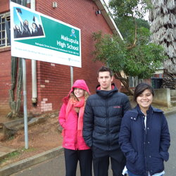
The First Day
This was the first day at our school... and I thought South Africa was hot!
New challenges
There were many challenges I faced in the classroom.
Language barriers, covering lessons, different abilities, resources and attendance were among many.
Respect was fortunately not one of these challenges though. This picture is the view from the school building, thought
to be one of the best in Stellenbosch.
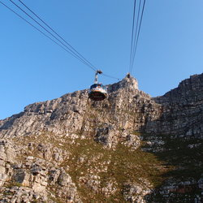
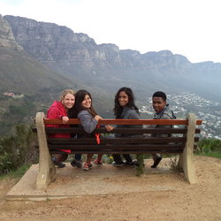
Seeing South Africa
Table mountain and Lions head. This spectacular scenery took my breath away.
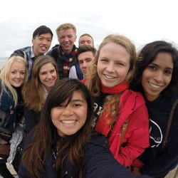
New people
We were a multinational team with students from the University of Singapore and Warwick!
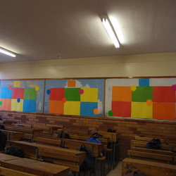
The display
I made each of the three classes I taught a notice board. I then had a game each lesson and the winner
got to put their name on a star and pin it on their notice board. The kids loved it!
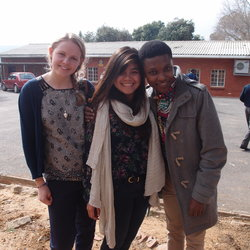
Culture lessons
It was a great opportunity when a student teacher at the university of stellenbosch had their
placement at our school. He taught me many things about the culture and this helped in getting to
know the students better. We met many other nationalities too. Ernst and young volunteers, a German teacher who was on an overseas
placement as part of his teacher training and an American volunteer working at our school to improve the library.
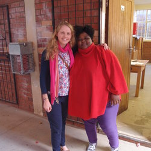
A legacy
I wanted to give my teacher as much help as possible to continue the activities we had been doing. One of these
activities was doing a daily "speed test" to improve mental maths. I left an egg timer and about 500 tests for her to use.
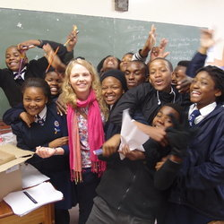
The last day
This was my last day teaching. This picture is full of the students' energy and happiness.
Travelling
Summary
This is a blog which talks about the beautiful places I have been.
This includes a great range of things from my home of Yorkshire and my adventures there,
to holidays further afield.
Take a scroll down to discover more... Or click back to blogs(top right) to go back.
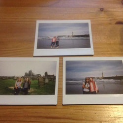
Whitby
Day out with the girls. Going retro with polaroids!
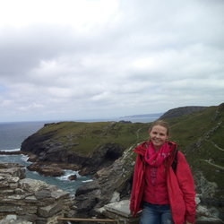
Cornwall
Being by the sea is so calming. It has a vastness which makes you feel so small. This was at King Arthur's castle! The caves where Merlin kept
his dragon were really quite eerie.
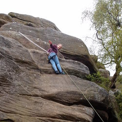
Brimham Rocks
Growing up I had regular adventures at Brimham. This adventure (right) was more extreme than scrambling on rocks..
It called for rope, my brother and my first outdoor climb!
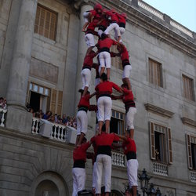
Barcelona
Barcelona has loads of cute little shops and restaurants.
The culture is so rich and the architecture is the most beautiful I have seen. I
visited during the Catalan festival which meant I saw loads of these awesome human towers. I felt terrified for
the little guy on top!
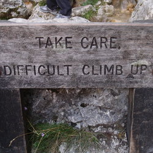
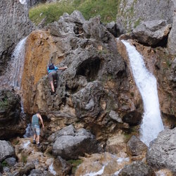
Gordale scar
Gordale scar and Malham is one of my favourite hikes. The climb up the waterfall
is exciting and rewarding. This was the third time I did the walk and I still enjoyed it
as much as the first time.
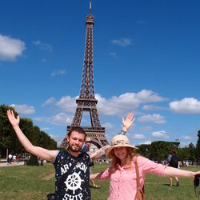
Paris
My brother gave us a grand old tour of Paris. We had lots of fun and even
managed to help mum overcome her fear of heights and climb to the top of the Eiffel Tower.
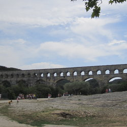
South of France
The Pont du Gard was just down the road from where I stayed. This structure made in Roman times to carry water was astounding and
it was nice to sit by the river in the sunshine.
Berlin
Museums, bar crawls, modern art and graffiti artists. I loved it!
Luzern
Whilst staying in Zurich I visited the nearby Luzern. This was a truly idyllic place.
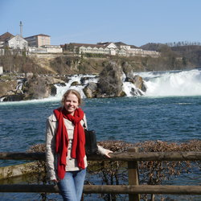
Rhein
Beutiful scenery in the Swiss canton of Graubunden in the southeastern Swiss Alps.

Cold stones cut (near Pately Bridge)
This place brings together art and mining! My mum and I went here just to while a way a few hours and it was very peaceful.
There is the view over a working mine as well as historic mining sites and modern art all in the centre of the beautiful yorkshire dales.
London
On a visit to London I came across this collection of slide rules in the science museum!
Summary
Graduated from the University of Warwick with a first class Master of Mathematics and an award for outstanding academic achievement.
Currently, I work on the lightends trading desk at Castleton Commodities International where I am utilising my mathematical and programming experience in
quantitative analysis and trading strategies. Previously, I supported the origination team at Centrica in advising clients, offering new ideas, valuing deals
and discovering opportunities.
Studying mathematics has refined my analytical skills and my clear aptitude for understanding and solving complex problems can be
shown both by my final year project on Ergodic Theory and research using stochastic analysis applied to mathematical finance, which I carried out in my spare time.
Furthermore, I continually strive to widen my experience in other technical areas such as programming. I have completed various projects including building
my own website, developing a back-testing framework in MATLAB using object oriented programming and completing an online course in machine learning.
My ability to use enthusiasm and creativity to succeed in a variety of organisations, despite being in pressurised situations, demonstrates
versatility. Finally, I am passionate about contributing to the communities I belong to, displayed by my activities in Athena Swan and teaching in South Africa.
Education
Warwick University, UK
MMath in Mathematics ◊ October 2012 - June 2016
Year 1 (76%):
Analysis I & II (MA131),
Foundations (MA132),
Differential Equations (MA133),
Geometry and Motion (MA134),
Linear Algebra (MA106),
Abstract Algebra (MA136),
Mathematics by Computer (MA124),
Programming for Scientists (MA117),
Probability A (ST111),
Probability B (ST112),
Logic I:Introduction to Symbolic logic (PH126).
Year 2 (68%):
Analysis III (MA244),
Algebra I: Advanced Linear Algebra (MA251),
Vector Analysis (MA231),
Combinatorics (MA241),
Second Year Essay (MA213),
Metric Spaces (MA222),
Introduction to Partial Differential Equations (MA250),
Algebra II: Groups & Rings (MA249),
Combinatorial Optimisation (MA252),
Stochastic Processes(ST202),
Year 3 (87%):
Measure Theory (MA359),
Functional Analysis I (MA3G7),
Functional Analysis II (MA3G8),
Probability Theory (ST318),
Introduction to Topology,
Dynamical Systems,
Ergodic Theory,
Applied Stochastic Processes,
Foundations of Accounting (IB133),
Foundations of Finance (IB132)..
Year 4 (89%):
Fourier Analysis(MA433),
Project in Ergodic Theory(MA469),
Advanced Partial Differential Equations (MA4A2),
Brownian Motion (MA4F7),
Dynamic Stochastic Control (ST411),
Bayesian Forecasting and Intervention (ST337),
Financial Mathematics (ST339),
Principles of Finance I (IB253)
Problem Solving (IE420).
Harrogate Grammar School, UK
Secondary School ◊ September 2004 - June 2012
A-Levels: Mathematics(A*), Further Mathematics(A*), Physics(A*), Chemistry(A*), Economics(A)
AS-Levels: Additional Further Mathematics(A)
GCSEs: 4 A*s and 2 As
Work Experience
Castleton Commodities International, UK
Quantitative Analyst ◊ May 2017 - Present
- Build real time fundamental models for the lightends trading desk.
- Manage and develop relationships with key market players.
Centrica, UK
Energy Marketing and Trading Analyst ◊ Oct 2016 - May 2017
- Support sales by providing valuations, hedging strategies and fundamental market analysis.
- Build models in VBA which use linear optimisation and backtesting to evaluate the intrinsic value of different gas swing contracts. Analyse patterns in gas prices to find potential arbitrage opportunities.
- Investigate relationships within the power markets using correlation, regression analysis and fundamental supply and demand dynamics.
- Used Monte Carlo simulations and distribution fitting to value the cost of a flexible gas contract.
- Research all aspects of emerging technologies which generate power and gas including regulations. Build business cases and find possible opportunities within these markets.
- Interact with clients regularly to find bespoke solutions and network in the industry by attending conferences. Gained understanding and experience of over the counter trading in the energy markets.
Warwick University, UK
Undergraduate Researcher ◊ June 2015 - September 2015
- Prepared by taking an advanced module not for credit. Contributed to publishable work in this area.
- Conducted research on the optimal timing decision for executives of when to exercise options given they can exert managerial effort to influence the underlying stock price.
- Analysed and discerned unfamiliar material which developed competency in reading academic papers.
- Summarised findings into a poster and presented to academics. Enhanced skills in Matlab and LaTeX.
Warwick Mathmematics Institute, UK
Open Day Speaker ◊ October 2014 - March 2015
- Researched and selected relevant information to produce a useful presentation, promoting my department and sharing my experiences.
- Presented regularly to an audience of over 300 visitors and received positive feedback.
- Reflected on each performance and improved my presentation skills and adjusted content accordingly.
Warwick in Africa, South Africa
Volunteer Teacher ◊ July 2014 - August 2014
- Taught in a township school for 6 weeks. Managed a classroom despite language and cultural barriers.
- Prepared lessons, covered for teachers, coordinated trips and organised after school clubs.
- Adapted to work effectively in a disorganised and unpredictable environment with limited resources.
- Equipped teachers with new techniques and classroom activities. The class average increased by 30%.
Harrogate and District NHS Foundation Trust, UK
Volunteer Auditor ◊ August 2013
- Audited a patient care pathway which involved understanding detailed information in a short time.
- Analysed and interpreted data to report to my manager. Recommended ways to improve the implementation of the pathway.
CCF Accountancy, UK
Assistant Accountant ◊ August 2012 - September 2012
- Carried out basic accounting and bookkeeping. Covered the front desk, directly interacting with clients.
- Communicated with clients to obtain necessary information. Gained experience with SAGE and Excel.
Experience
Athena Swan
Undergraduate Representative ◊ March 2014 - Current
- Organised surveys, contributed to discussions and proposed ideas to address the gender imbalance in mathematics.
- Recruited other women and minorities in the undergraduate community to join Athena Swan.
- Obtained funding and support from the department for weekly coffee mornings aimed at women.
- Publicised, developed and led coffee mornings. Coordinated speakers, workshops, activities, discussions and a joint staff and student event.
- Campaigned successfully for a new position on the executive of theWarwick Mathematics Society whose role is to continue and develop these events.
- Increased the ratio of male to female on the executive of Warwick Mathematics Society from 8:1 in 2014 to 3:2 in 2015, as a direct result.
Warwick Mathematics Society
Revision Guides Editor ◊ February 2014 - February 2015
- Edited and printed over 20 revision guides which accumulated in over 3000 printed copies for over 800 members. Arranged the venue, advertising and logistics for the distributions of printed copies.
- Implemented an online request form to deal with demand and supply issues the society had experienced.
- Expanded the position which resulted in the appointment of a second editor the following year.
- Contributed to all aspects of the society. In particular, provided ideas for new initiatives.
Warwick Yoga Society
Head of Class ◊ February 2014 - February 2015
- Liaised with the yoga instructor on matters concerning administration, replacements and remuneration.
- Planned, promoted and ran events as part of a team such as yoga brunch and other socials.
Skills
Computing
LaTeX (Advanced), MATLAB (Advanced), Microsoft Excel (Advanced), VBA (Advanced), Java (Basic), HTML (Basic), Javascript (Basic), css (Basic) , Python (Basic)
Other
I hold a full, clean driving licence.
Interests
Sport
Yoga, Rock Climbing, Badminton, Squash and Swimming.
General
Cooking, Reading, Travelling and Mentoring.
Contact Me
Email:
fergusonroseanna@gmail.com